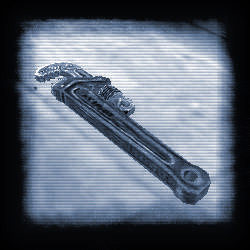
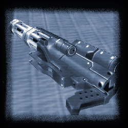

|

Sven Co-op features weapon-replacement technology, allowing each map to include its own unique weapons (WW2-era weapons in AfrikaKorps, for example). These weapons will usually work in a similar way to the default weapons, but may deal out drastically different amounts of damage.
MedKit
Primary Fire: Heal
Secondary Fire: None (yet)
Ammo: HealthThe MedKit is designed to help keep your teammates alive. Simply move close to a player that needs healing, and "fire" the medkit at them to heal 10 health points.
The MedKit will become empty quickly if lots of people need healing, but it will slowly fill up on its own. You can also refill it quickly using wall-mounted Health Chargers.
You cannot heal yourself with the medkit, instead you will need to use the "medic" command to call for assistance.
In most Sven Co-op maps, you will start with the medkit in your inventory.
Barnacle Grapple
Primary Fire: Fire grapple
Secondary Fire: Switch between Rappel/Pull modes
Ammo: N/AThe Barnacle is used to help players reach areas that are too high to jump. It can only attach to players, certain monsters, and certain Xen textures (usually obvious-looking grapple points).
The way the Barnacle Grapple works is defined by the map creator. On some maps, it will only attach to small monsters. On others, it will pull monsters towards you instead of the other way around.
Unique to the Sven Co-op version of the Barnacle Grapple, players can either be pulled by the Grapple, or be dropped slowly (rappel), depending on what mode is chosen.
You can grapple onto your fellow players, allowing you to, for example, "boost" another player onto a ledge then grapple up to the ledge yourself. Alternately, if you were on a ledge above a deep cavern, you could grapple onto a player and rappel to the bottom. You could even use the barnacle to "hold onto" another player as he swings through a tricky grapple course.
You can swap between Rappel and Pull modes while the barnacle is attached to a surface, this allows you to "bungee".
Pipe Wrench
Primary Fire: Normal Attack
Secondary Fire: Power up swing
Ammo: NoneThe Pipe Wrench deals more damage than the crowbar, but is somewhat slower. This makes it better at taking out groups of small to medium-sized creatures quickly.
Holding the secondary powerup for around 6 seconds will give the maximum damage possible with this weapon.

Uzi (Single)
Primary Fire: Fire
Secondary Fire: Swap to Second Uzi (if picked up)
Ammo: 9MMThe Uzi is a small, fast submachine gun that deals a lot of damage quickly. However it uses up ammo a lot faster than the MP5 and has a smaller clip.
Uzi (Akimbo)
Primary Fire: Fire
Secondary Fire: Swap to Second Uzi (if picked up)
Ammo: 9MMThe Uzi is a small, fast submachine gun that deals a lot of damage quickly. However it uses up ammo a lot faster than the MP5 and has a smaller clip.
Doubled up, the Uzi has double the power, but a much longer reload time.
You can get akimbo Uzis by grabbing an additional Uzi from a fallen ally.
M40a1 Sniper Rifle
Primary Fire: Fire
Secondary Fire: Toggle Zoom
Ammo: M40a1 clipA slow but powerful weapon, the M40a1 Rifle is a pretty standard Sniper Rifle.
In Sven Co-op, the M40a1 does more damage than in OP4, but is inaccurate when not zoomed in.
M134 Minigun
Primary Fire: Spin up and Fire
Secondary Fire: Hold Spin
Ammo: Chaingun AmmoThe Ultimate weapon for Sven Co-op players, the minigun is capable of cutting through hordes of monsters with a stream of bullets.
The Minigun can be spun-up/kept spinning by holding using the secondary fire button. Pressing the fire button in this mode will make the minigun fire straight away, without the need for the initial spin-up.
While holding the minigun, players are a lot slower, and are unable to change weapons. You must Drop the minigun to be able to select another weapon (set a key to 'Drop Weapon' in the control options).
Killing a HW Grunt allows a single player to collect a single-use minigun.
While using the minigun, a lone player is extremely vulnerable. The minigun must be used as a support weapon, with other players defending the minigunner and/or distracting enemies until the minigun can be spun up.
Aiming is improved while the player is crouched.
 Changes to Old Weapons
The crowbar can be electrified using Alternate Fire in LAN games (and Internet games if you've donated to the mod). It will then deal double damage, but use battery power with each successful attack
Grenades can be rolled along flat or sloped surfaces, and using the Alternate Fire key while holding ten grenades will trigger a secret attack on certain maps
Satchel charges can be kicked around the ground (satchel football!!)
The shotgun blasts enemies backwards on death
Player-thrown Snarks will not attack allies
Hornets fired by players will not attack allies, and can be used to confuse mechanized enemies
|
© 2003 Sven Co-op. All Rights Reserved. |